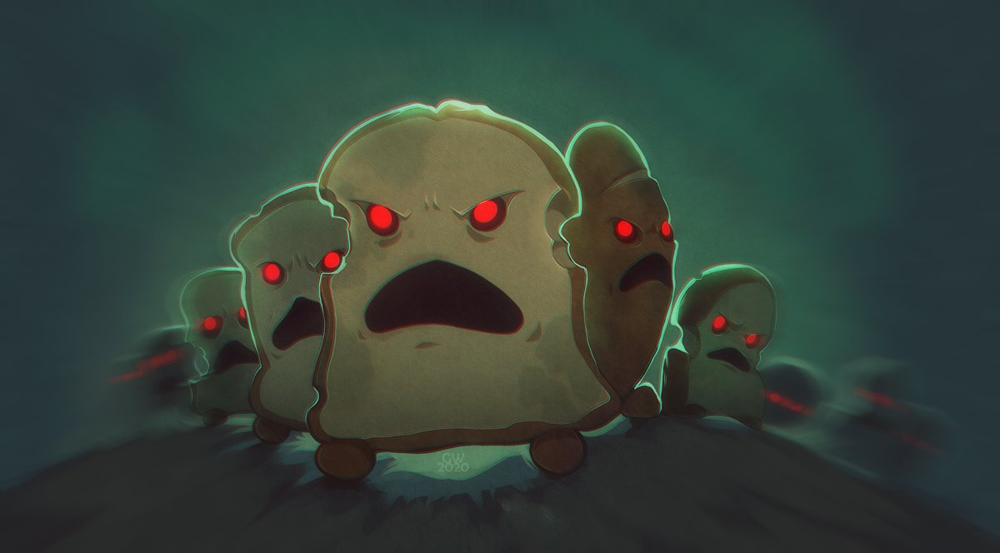

The Unbread

This recipe is geared towards innovative minds, chefs, and necromancers alike.
If you are looking for a challenge in the kitchen that will threaten the livelihood
of your living vegetable kingdom, look no further than our Unbread recipe.
Note: We are not responsible for any bodily harm inflicted on unsuspecting parties by
the unbred.
Ingredients
- Flour
- Yeast
- Water
- Sugar
- Salt
- Oil
Cooking Instructions
- In a Large Bowl, dissolve the sugar in warm water, and then stir in yeast
- Allow to proof until yeast resembles a...rich..creamy...foam *thunder sounds*
- Mix in ssalt and oil, then mix in the flour
- Knead the dough...cover with a damp cloth
- And Allow...to...RISE!!!!
- After repeating these words Enjoy your fresh army of The Unbread!